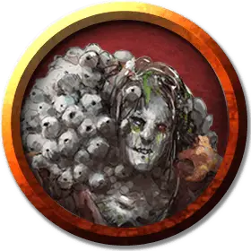

Утопший убийца
Drowned Assassin
Средняя Нежить, хаотично-злая

Класс Доспеха 14 (кожаный доспех)
Хиты 67 (9к8 + 27)
Скорость 30 футов
| мод | спас | ||
|---|---|---|---|
| СИЛ | 15 | +2 | +2 |
| ЛОВ | 16 | +3 | +5 |
| ТЕЛ | 16 | +3 | +5 |
| мод | спас | ||
|---|---|---|---|
| ИНТ | 9 | −1 | −1 |
| МДР | 9 | −1 | −1 |
| ХАР | 16 | +3 | +3 |
Навыки Запугивание +5, Скрытность +5
Иммунитет к урону яд
Иммунитет к состояниям отравление
Чувства тёмное зрение 60 футов, пассивное Восприятие 9
Языки Понимает языки, которые знал при жизни, но не может говорить.
Опасность 4 (1100 опыта)
Бонус мастерства +2
Особенности
Ходящий по дну. Утопший убийца не может плавать, и он опускается на дно любого водоема. Он не получает никаких штрафов за своё передвижение или атаки под водой. Он невосприимчив к воздействию пребывания под водой на глубине более 100 футов.
Связанные вместе. Утопший убийца делится своим разумом со всеми другими утопшими в пределах 1 мили от него и может передавать им свои мысли и наблюдения мгновенно и без ограничений.
Стойкость нежити. Если утопший убийца получает урон, уменьшающий хиты до 0, он совершает спасбросок Телосложения Сл 5 + полученный урон, если только это не был урон излучением или урон от критического попадания. При успехе хиты утопшего убийцы опускаются всего лишь до 1.
синегниль. Эта болезнь поражает гуманоидов. У страдающего от синей гнили существа на лице и спине вырастают причудливые синие фурункулы. Эта болезнь переносится нежитью, и жертвы чаще всего приобретают её через раны, полученные от инфицированных существ. Фурункулы болезни проявляются через 1к4 часов, после чего показатели Телосложения и Харизмы жертвы снижаются на 1к4 каждый, минимум до 3. За этим быстро следует лихорадка и покалывание в конечностях. Зараженное существо получает уязвимость к урону излучением и приобретает способность дышать под водой.
В конце каждого продолжительного отдыха зараженное существо совершает спасбросок Телосложения Сл 12. В случае успеха жертва восстанавливает 1 значение Телосложения и 1 значение Харизмы, утраченные из-за болезни. Если зараженное существо восстанавливает все значения, потерянные из-за болезни, оно излечивается. Другие эффекты, повышающие значения характеристик жертвы, не излечивают болезнь. При провале спасброска жертва получает 18 (4к8) урона некротической энергией, так как фурункулы лопаются и растекаются. Существо, чьи хиты уменьшаются этим уроном до 0, не может восстанавливать свои хиты до тех пор, пока болезнь не будет излечена, хотя его можно стабилизировать как обычно.
Действия
Мультиатака. Утопший убийца совершает две атаки Ручным арбалетом или две атаки Кинжалом. После чего он может совершить действие Рывок, Отход или Засада.
Ручной арбалет. Дальнобойная атака оружием: +5 к попаданию, дистанция 30/120 футов, одна цель. Попадание: 6 (1d6 + 3) колющего урона плюс 3 (1к6) урона ядом, и цель должна преуспеть в спасброске Телосложения Сл 12, иначе будет заражена синегнилью.
Кинжал. . Рукопашная атака оружием: +5 к попаданию, досягаемость 5 футов, одна цель. Попадание: 5 (1к4 + 3) колющего урона плюс 9 (2к8) урона ядом, и цель должна преуспеть в спасброске Телосложения Сл 12, иначе будет заражена синегнилью.
Раскрытие (1/день). Утопший убийца снимает маску, демонстрируя свое гниющее лицо. Каждое выбранное убийцей существо в пределах 30 футов от него, которое может видеть убийцу, должно преуспеть в спасброске Мудрости Сл 13, иначе станет испуганным до конца своего следующего хода.
Описание
Утопший убийца выслеживает и убивает со зловещей мимикой своего прежнего занятия. Крадущийся от тени к тени и появляющийся в атаке нежити в "Судьбе Таммераута", он нацеливает свой ручной арбалет, инкрустированный ракушками, со смертоносной точностью. Скрытое за простой маской из коряги, лицо этого существа вызывает ужас в сердцах смертных, когда оно открыто.